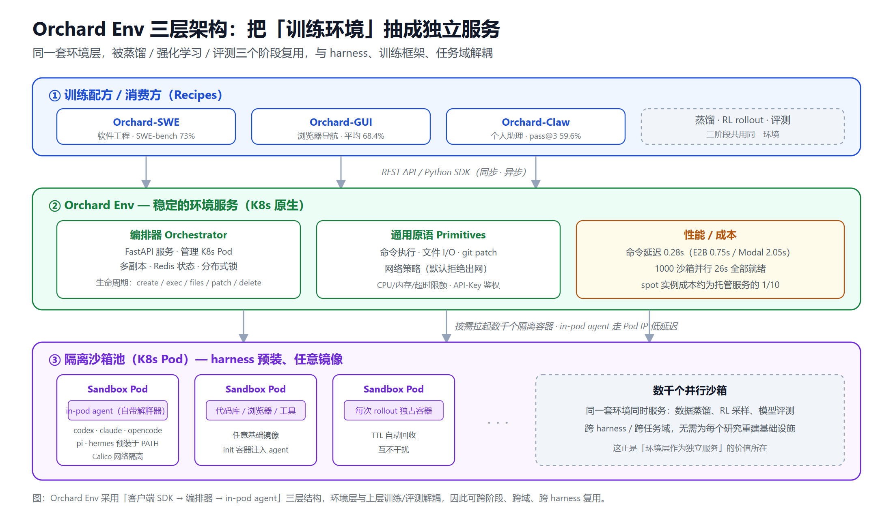
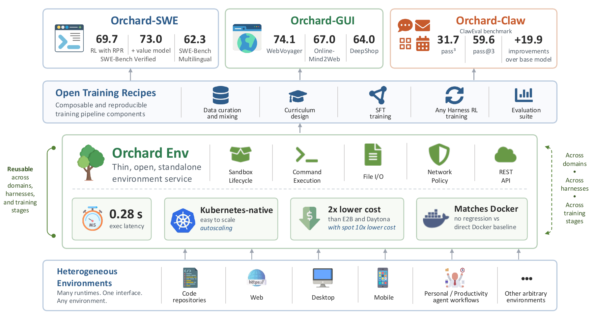
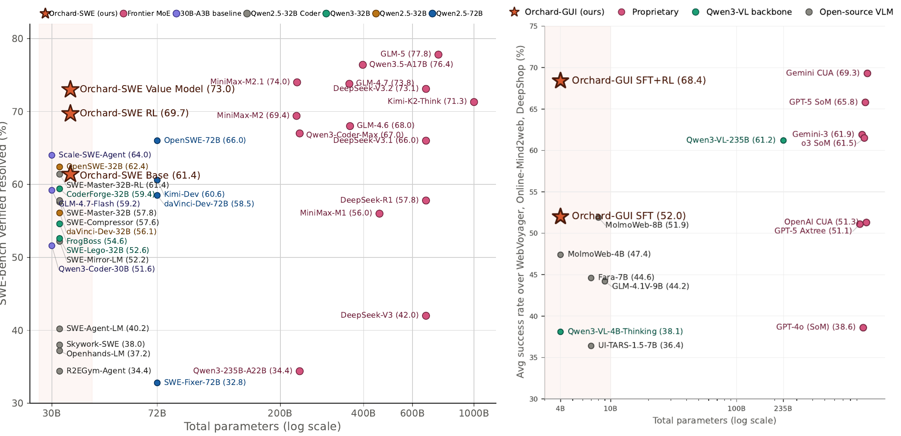
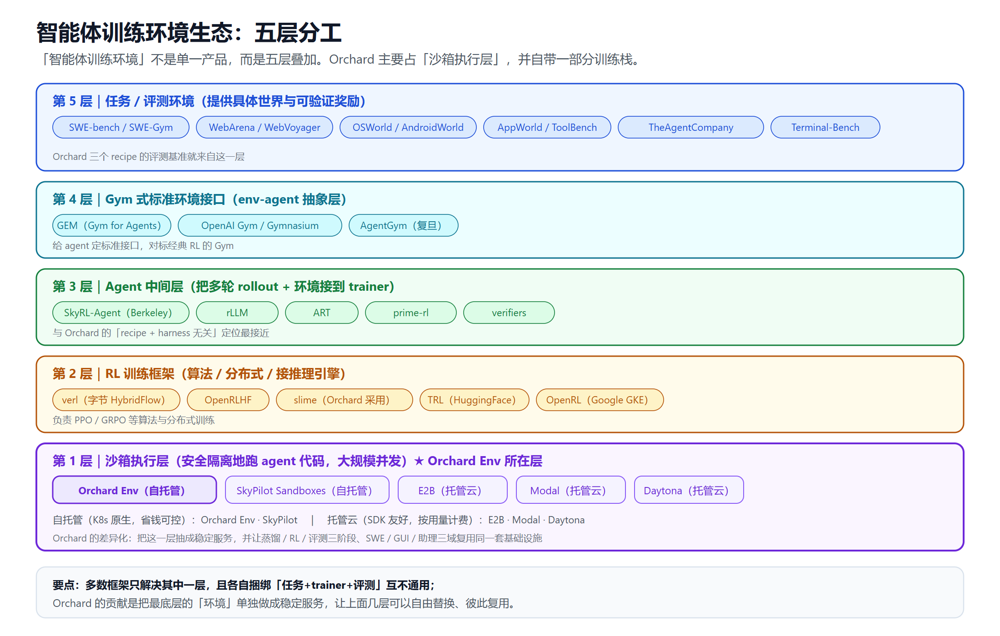

微软开源 Orchard：把「训练环境」做成服务，让小模型逼近前沿智能体
2026 年 8 月 3 日，微软研究院开源了一个叫 Orchard 的框架，同时甩出一组让人愣住的数字：一个只有约 30 亿激活参数的开源模型，在业界最硬的软件工程基准 SWE-bench Verified 上做到了 69.7%，配合价值模型重排后冲到 73.0%——这个成绩逼近了参数量大它 10 倍以上的前沿闭源系统。
无独有偶，同一套框架训出来的浏览器智能体只用了 4B 参数，在三个网页导航基准上平均拿到 68.4%，成为当时最强的开源 GUI 智能体；个人助理智能体仅靠 200 个合成任务训练，就把某个 harness 上的成功率从 18.6% 拉到了 51.5%。
小模型、少数据、低成本，却能打平甚至逼近"重量级选手"。Orchard 想证明的，不是又造了一个更大的模型，而是一件更底层的事：决定智能体能力上限的，可能不只是模型本身，而是训练它的那套「环境」。 而这套环境，长期以来一直是被闭源基础设施、私有沙箱和不可复现的数据管线卡住的瓶颈。
这篇文章会把 Orchard 讲清楚：它是什么、核心原理是什么、三个训练配方各自证明了什么，以及——它在整个"智能体训练环境"赛道里到底站在什么位置。
先厘清：这个 Orchard 不是那个 Orchard
搜索"Orchard"你会撞见一个同名的老项目——基于 ASP.NET 的 Orchard Core CMS，一个做了十几年的开源内容管理系统。那和本文说的完全无关。
本文的 Orchard 全称是 《Orchard: An Open-Source Agentic Modeling Framework》（Peng et al., arXiv:2605.15040），由微软研究院的 Baolin Peng、Wenlin Yao、Qianhui Wu、Hao Cheng，以及技术院士、企业副总裁 Jianfeng Gao 等人主导。它是一个面向智能体（agentic AI）训练与评测的研究框架，采用 MIT 协议在 GitHub（microsoft/Orchard）开源，附带训练数据集（Hugging Face）和完整训练管线。
一句话定位：Orchard 是一个可扩展、低成本的智能体建模研究基础设施，核心是把「运行环境」从训练框架里剥离出来，做成一个独立、可复用的服务。
它要解决的痛点：环境层的重复造轮子
要理解 Orchard 的价值，得先看看做智能体研究的人现在有多痛。
今天最能打的智能体，早已不是"一个模型直接输出答案"那么简单。它们要在真实代码库里多步推理、调用工具、从错误里恢复，要在动态网页上点击、填表、跳转，要读邮件、管日历、跨工具协作。这类多轮、长程、带真实副作用的任务，必须跑在一个能安全隔离地执行代码、还能大规模并发的沙箱环境里。
问题在于：这套环境基础设施，过去几乎全是各家闭门自建的。想复现一篇 SOTA 论文，你往往需要人家专有的沙箱、闭源的训练管线、拿不到的私有数据集。结果就是每个团队、每个新研究，都在从零重建一套"任务 + 环境 + 训练器 + 评测"，彼此还不通用。这种重复造轮子，正是开源社区追赶前沿智能体的最大阻力。
Orchard 的判断很直接：环境层不应该是塞在某个训练框架里的一段代码，而应该是一个独立、稳定、可复用的服务。 把这一层抽出来做对了，上面的训练算法、harness、任务域都可以自由替换。
核心：Orchard Env——把环境做成服务
Orchard 的心脏是 Orchard Env，一个轻量、Kubernetes 原生的沙箱环境服务。它的设计哲学是"薄"：只暴露一组通用原语（primitive），对上层的 harness、训练器、推理后端、任务类型不做任何假设。
它对外提供的原语包括：
- 沙箱生命周期管理（create / exec / files / patch / delete）的 REST API
- 命令执行、文件 I/O、git patch 等基础操作
- 网络策略（默认拒绝出网）、按沙箱的 CPU/内存/超时限额、TTL 自动回收、API-Key 鉴权
- 同步与异步两套 Python SDK，带自动清理、重试和 context manager 用法
架构上，Orchard Env 是清晰的三层：客户端 SDK →编排器（Orchestrator）→ in-pod agent。编排器是一个 FastAPI 服务，负责管理 Kubernetes Pod 的生命周期与调度，多副本部署、用 Redis 存状态、靠分布式锁协调；每个沙箱容器在运行时由 init 容器注入一个轻量的 in-pod agent，它自带一个独立的 Python 解释器，所以用户的基础镜像根本不需要预装 Python。
下面这张图把这三层以及它"跨阶段、跨域复用"的关键设计画在了一起：

这个设计带来两个直接好处。
第一，它足够快、足够便宜。 官方给的对比很硬：Orchard Env 的平均命令执行延迟是 0.28 秒，而 E2B 是 0.747 秒（慢 2.7 倍）、Modal 是 2.046 秒（慢 7.3 倍）；并行启动 1000 个沙箱能做到 100% 成功、26 秒全部就绪，吞吐约 154 命令/秒。成本上，128 个沙箱跑 240 小时，用 spot 实例只要约 673 美元，而同等规模的托管沙箱服务要 7078 到 10305 美元——便宜约 10 倍。in-pod agent 走 Pod IP 直连、绕开 K8s API server 的热路径，是低延迟的关键。
第二，它是"harness 无关"的。 这是 Orchard 最有意思的一点，值得单开一节讲。
harness 无关：消除"训练-部署失配"
先解释什么是 harness（有人译作"驾驭工程"或"支架"）。今天最强的智能体很少以"裸模型"运行，它们都跑在一层复杂的外围工程里——像 Claude Code、Codex、OpenClaw 这些，负责管理多轮推理、工具调用、和外部系统的连接。关于这层"看不见的一半"，我之前专门写过一篇 Harness 工程：决定 AI Agent 成败的看不见的一半。
痛点在于：开源训练工具通常搞不定这种有状态、多进程的 harness。 于是研究者被迫在一个简化的"替身环境"里训练，然后拿到真实 harness 里部署——训练和部署的环境对不上，这就是"训练-部署失配（train–deploy mismatch）"。模型在训练时见到的世界，和它实际工作的世界不是同一个。
Orchard Env 把这条缝补上了：每个沙箱都预装了 codex、claude、pi、opencode、hermes 等主流 harness，直接放在 PATH 上，切换训练/评测所用的 harness 只是换一条命令，而不是换一个镜像。一个轻量代理会记录 harness 自己发出的模型调用，把它们重构成任意 RL 框架都能用的训练样本，同时每次 rollout 都跑在自己独立的容器里。这样一来，智能体可以直接在它将来要部署的那个 harness 里端到端训练——OpenClaw、Codex、ZeroClaw 都行，甚至能跨多个 harness 训练。
这不是纸面设计。Orchard-Claw 在 Codex harness 下，未训练模型成功率只有 18.6%，经过 Orchard 训练后升到 51.5%。而更能说明泛化性的是：Orchard-SWE 在一个训练时从没见过的 Kimi-CLI harness 上仍能拿到 45.0% 的 SWE-bench Verified，而对比模型 OpenSWE-32B 直接崩到 3.6%。训练时面对一个 harness 无关的环境，是这种迁移能力的来源。
三个训练配方：一套环境，三个战场
在 Orchard Env 之上，团队放出了三个领域的训练配方（recipe），用同一套环境服务分别攻软件工程、网页导航、个人助理三个方向。官方给出的框架总览图，很清楚地画出了"环境层居中、三个任务域在上"的结构：

图片来源：microsoft/Orchard（GitHub）
Orchard-SWE：软件工程智能体
软件工程是对自主智能体最苛刻的场景之一：要在真实代码库里多步推理、用工具、还要能从错误里恢复。Orchard-SWE 基于 Mini-SWE-Agent 框架，用 Qwen3.5-35B-A3B（约 3B 激活参数）在 SWE-bench Verified 上评测。它的训练链路是这套文章里技术含量最高的部分：
- 数据蒸馏：从两个先进开源模型（MiniMax-M2.5 和 Qwen3.5-397B）蒸馏出 10.7 万条智能体交互轨迹，覆盖大量 GitHub Issue。
- 信用分配 SFT（credit-assignment SFT）：不丢弃那些"没能完全解决问题"的失败尝试，而是从其中有效的片段里学习，把可用训练数据量放大。
- 强化学习：SWE 的奖励非常稀疏——智能体通常只知道最终补丁"过没过"隐藏测试。团队先用 Balanced Adaptive Rollout 榨干这些稀有的成功信号，再叠加两种"稠密奖励"：一是 on-policy 蒸馏，让更强的教师模型逐步给智能体的决策打分；二是过程奖励模型，让 AI 裁判去奖励"好的解题过程"（写复现测试、验证修复、检查不破坏原有行为），而不只看最终测试是否通过。
- 价值模型重排：把 20 个历史实验里那些通常会被丢弃的轨迹，拿去训一个紧凑的 4B 价值模型；解题时它给多个候选答案打分、挑最好的一个。
这套组合把 Orchard-SWE 从 61.4% 的基线，一路推到 Balanced Adaptive Rollout 的 69.1%、稠密奖励的 69.7%，再到价值模型重排的 73.0%——在约 3B 激活参数这个量级上刷新了开源 SOTA，逼近大它 10 倍以上的前沿系统。它还在 SWE-bench Multilingual 上保持 51.0（对比 OpenSWE-32B 的 28.7），泛化性明显更强。
Orchard-GUI：轻量浏览器智能体
网页导航是另一类挑战：要看懂视觉布局、和动态界面交互、完成只用自然语言描述的开放式任务。Orchard-GUI 训练的是一个 4B 视觉语言模型（Qwen3-VL-4B-Thinking），监督数据少得惊人——只有 400 条蒸馏示范 + 2200 个开放式训练任务。
就这么点数据，结果却是：WebVoyager 74.1%、Online-Mind2Web 67.0%、DeepShop 64.0%，平均 68.4%，成为当时最强的开源 GUI 智能体，还和 OpenAI、Google 的闭源系统打得有来有回。更夸张的是，它用少两个数量级的训练任务，打败了自己那个 235B 的教师模型。这说明在对的环境和训练方法下，小的开源模型完全能胜任真实网页任务。关于这类浏览器智能体的技术路线，可以参考我之前写的 浏览器 GUI 智能体横评。
把 Orchard-SWE 和 Orchard-GUI 放到"性能 vs 参数量"的坐标上，能更直观地看到"小模型逼近大系统"这件事——两者都以远小于对手的参数量，逼近或追平了大它 10 到 30 倍的系统：

图片来源：microsoft/Orchard（GitHub）
Orchard-Claw：日常生产力的个人助理
很多最有价值的智能体应用其实是日常琐事：读写邮件、管日历、查信息、跨工具协调。Orchard-Claw 聚焦这类个人助理任务，只用 200 个由 Opus 合成的任务训练，在 Claw-Eval 基准上三次尝试内完成率 59.6%，换上更强的 ZeroClaw harness 后升到 73.9%。
因为 Orchard 能直接在真实 harness 里训练，Orchard-Claw 是跨 ReACT、ZeroClaw、OpenClaw、Codex 多个 harness 训练的，而不是单一简化循环。前面提到的"Codex 下从 18.6% 到 51.5%"就来自这里。它也是所有对比模型里，换到更强 harness 后收益最大的一个。
把 Orchard 放进整个生态里看
Orchard 很亮眼，但如果只看它本身，容易误以为"智能体训练环境"就是一个东西。实际上这是好几层叠在一起的赛道，Orchard 主要占其中一层。下面这张图把这五层拆开了：

第 1 层：沙箱执行层——负责安全隔离地跑智能体生成的代码、并大规模并发。这是 Orchard Env 的正面战场。商业托管云有 E2B（SDK 友好但按量计费、规模大很贵，正是 Orchard 拿来对比延迟和成本的对象）、Modal（serverless、冷启动快、带 GPU）、Daytona；自托管路线里，SkyPilot Sandboxes 和 Orchard 思路最像——都跑在你自己的 K8s 集群上，主打便宜可控。关于这层的选型，我之前写过 AI Agent 代码沙箱指南。
第 2 层：RL 训练框架——负责 PPO/GRPO 等算法、分布式训练、和推理引擎打通。主流的有字节的 verl（HybridFlow，社区二次开发最多）、OpenRLHF（Ray + vLLM）、slime（连接 Megatron 与 SGLang，Orchard 的 trainer 正是 vendored 了它的一个 fork）、轻量的 TRL，以及 Google GKE Labs 2026 年放出的 OpenRL。这层的横向对比可以看 LLM 微调框架对比。
第 3 层：Agent 中间层——把多轮 rollout 和环境接到训练器上，和 Orchard 的"recipe + harness 无关"定位最接近。代表是 UC Berkeley 的 SkyRL-Agent（专做长程多轮智能体训练，能接 verl/SkyRL-train/Tinker）、口号"bring any harness, run in any sandbox"的 rLLM，以及 ART、prime-rl、verifiers 等社区工具。
第 4 层：Gym 式标准环境接口——对标经典 RL 的 OpenAI Gym，给智能体定标准的 env-agent 接口。代表是明确对标 Gym 的 GEM（A Gym for Agentic LLMs）、老祖宗 OpenAI Gym / Gymnasium，以及复旦的 AgentGym（多环境 + 轨迹库 + self-evolution）。
第 5 层：任务/评测环境——提供具体的"世界"和可验证的奖励，是跑在沙箱里的真实任务。软件工程有 SWE-bench、SWE-Gym、Terminal-Bench；网页/GUI 有 WebArena、WebVoyager、Online-Mind2Web；桌面/OS 有 OSWorld、AndroidWorld、AppWorld；综合有 TheAgentCompany、ToolBench。Orchard 三个 recipe 用的基准就来自这一层。
看清这五层，Orchard 的独特站位就清楚了：大多数框架只解决其中一层，而且每个项目都自带一套"任务 + trainer + 评测 harness"，彼此不通用。 Orchard 的差异化在于把最底层的"环境"单独抽成稳定服务，让蒸馏、RL、评测三个阶段，以及 SWE、GUI、助理三个域，复用同一套基础设施——上面几层因此可以自由替换。这也是为什么把它叫"framework"之外，官方更愿意称它为一个"foundation（基础）"。
意义与前瞻：环境层才是瓶颈
Orchard 的一系列结果，在反复强化同一个论点：环境层很重要（the environment layer matters）。
把底层基础设施做成开源、轻量、可复用的服务，直接降低了智能体研究的门槛。团队不必再从零搭隔离环境，也不必依赖闭源云服务；同一套 Orchard Env 能生成训练数据、跑 RL rollout、做最终评测，不用每次重建。对开源社区追赶前沿智能体来说，这是实打实的摩擦力下降。关于把智能体真正落到生产环境的完整链路，可以延伸阅读 企业 AI Agent 部署指南。
往前看，Orchard 指了两个方向。
一是累积式智能体学习。训练结束后，那些 rollout 轨迹通常被丢弃；Orchard 把它们当作持久资产——比如蒸馏成可复用的价值模型。这样智能体的"经验"能随时间累积，每一代新智能体都能继承、扩展前代获得的知识，而不是每次从零开始。
二是有状态沙箱（stateful sandbox）。目前环境是线性的：沙箱创建、驱动 N 轮、销毁，每次 rollout 都要重跑整段前缀，而一条轨迹（SWE 数据里平均 47.5 轮）只有一个最终奖励，很难归因到"真正起作用的那一步"——这就是核心的信用分配难题。路线图里的 pause/resume（在任意一轮快照并恢复）、branching（从同一快照分叉出 k 条续写，用蒙特卡洛估计该状态的价值）、prefix sharing（前缀只执行一次），正是要把这个难题从"间接推断"变成"直接测量"。作者强调，这个原语应该属于环境层，而不是某一个训练器。
它也顺手证明了数据效率的可能性：Orchard-GUI 那种"少量数据打平大模型"的表现，暗示更大规模的网页智能体也许不需要海量人工标注数据就能训出来。
小结
Orchard 的贡献，不在于又刷了几个基准的最高分，而在于它把一个长期被忽视、被各家闭门重造的东西——智能体的训练环境——单独拎出来，做成了一个开源、轻量、K8s 原生、harness 无关的稳定服务。
它用三个配方证明了一件事：当环境层做对了，约 3B 激活参数的开源模型能在 SWE-bench Verified 上冲到 73%，4B 的浏览器智能体能打平闭源系统，200 个任务就能训出可用的个人助理。这背后是一个正在被越来越多人认同的判断——在模型能力逐渐趋同的当下，环境和 harness 这层"外围工程"，正在成为决定智能体成败的真正分水岭。
对开源社区来说，Orchard 连同它的环境服务、训练管线和数据集一起放出来，最大的价值是把"追赶前沿智能体"的门槛，从"你得先有一套私有基础设施"降到了"你可以直接站在别人的地基上"。这件事的长期影响，可能比那几个基准分数更重要。
免责声明
本文基于微软研究院官方博客、GitHub 仓库、arXiv 论文等公开资料整理，所引用的性能数据、基准分数与技术细节均来自上述来源，可能随项目迭代而变化。文中涉及的第三方框架与产品对比仅为帮助读者理解生态定位，不构成任何选型建议或投资建议。请以各项目官方最新文档为准。
参考来源
- Orchard: An open framework for scalable agentic AI（微软研究院官方博客）
- microsoft/Orchard（GitHub 仓库与 README）
- Orchard: An Open-Source Agentic Modeling Framework（arXiv:2605.15040）
- microsoft/Orchard 轨迹数据集（Hugging Face）
- SkyPilot Sandboxes: Run Agent Code on Your Own Kubernetes, at Scale
- Best Sandboxes for Agentic / Multi-Turn RL in 2026（Modal）
- rllm-org/rllm: Democratizing Reinforcement Learning for LLMs
- SkyRL-Agent: Efficient RL Training for Multi-turn LLM Agent（arXiv:2511.16108）
- GEM: A Gym for Agentic LLMs（arXiv:2510.01051）
- OSWorld: Benchmarking Multimodal Agents in Real Computer Environments
- awesome-agent-rl-environments（社区环境清单）
相关阅读
- Harness 工程：当模型趋同，决定 AI Agent 成败的看不见的一半
- AI Agent 代码沙箱指南：安全执行 AI 生成代码
- 企业 AI Agent 部署指南
- 浏览器 GUI 智能体横评：Page Agent、Browser Use、Stagehand、Skyvern
- 从 LLM 到 Agent：ChatGPT 式对话正在退场
- LLM 微调框架对比
推荐搭配装备
善其事，利其器。以下硬件能最大化你的AI体验👇
🔗 通过以上链接购买可支持本站持续运营 🙏